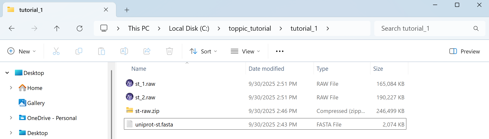
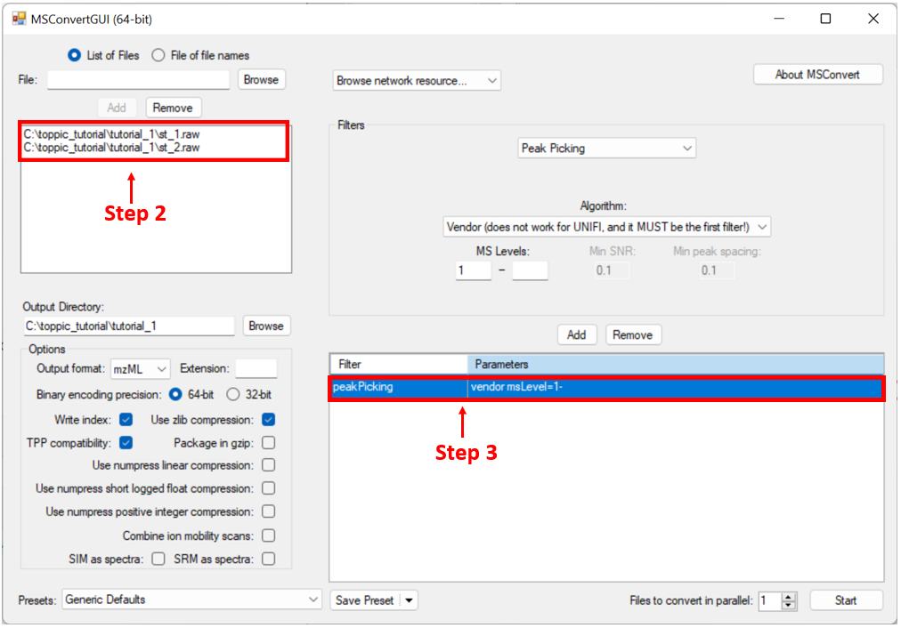
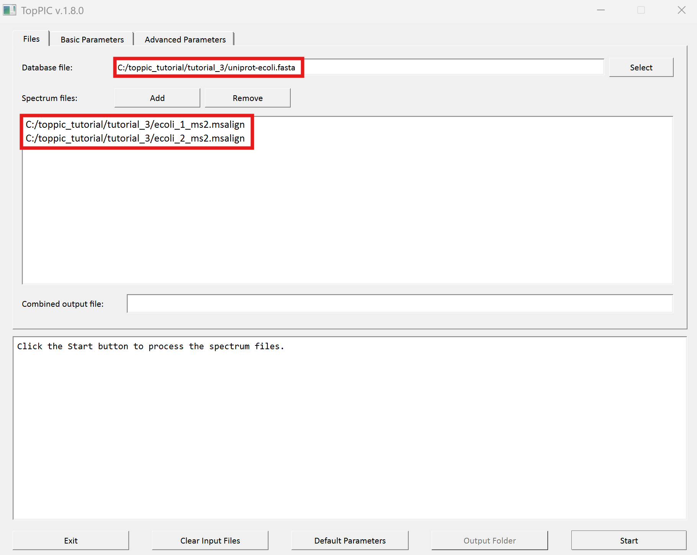

TopPIC Suite
1 Overview
In this tutorial, we use TopPIC suite to analyze several top-down MS/MS data sets on a computer with a Windows 10 operating system.2 Folders
Create the folders below for software packages and data sets used in this tutorial.
- Create a new folder named
toppic_tutorialon theC:drive of your system. - Create a new subfolder named
toppicin the folderC:\toppic_tutorial\for the software TopPIC suite. - Create a new subfolder named
tutorial_1in the folderC:\toppic_tutorial\. - Create a new subfolder named
tutorial_2in the folderC:\toppic_tutorial\. - Create a new subfolder named
tutorial_3in the folderC:\toppic_tutorial\.
The resulting folder structure is shown in the screenshot below.

3 Software tools
3.1 Msconvert
Msconvert is a software tool in ProteoWizard that converts raw files into various spectrum file formats.
3.1.1 Required software packages to install ProteoWizard
Microsoft .NET Framework 4.0 or a higher version is required. If you are using Windows 10, Microsoft .NET Framework 4.0 has been preinstalled.3.1.2 Download ProteoWizard
Follow the steps to below download ProteoWizard:
- Go to the link ProteoWizard.
- Choose the type 'Windows 64-bit installer' for end users and download ProteoWizard.
- Double click the downloaded file pwiz-setup-3.0-x86-64.msi to install it.
3.2 TopPIC suite
3.2.1 Download TopPIC suite
- Go to the download webpage of TopPIC suite.
- Choose the download type "Windows 64-bit zip file", fill out the registration form, and click "I accept license agreement and download TopPIC suite" to download it.
- Save it to the folder
C:\toppic_tutorial\toppic\. - Extract all the files of the downloaded zip file to the folder
C:\toppic_tutorial\toppic\.

4 Tutorial 1
In tutorial 1, we will use TopFD and TopPIC to analyze a top-down MS/MS data set of S. typhimurium for proteoform identification.4.1 Top-down MS/MS Date set
In the experiment, the protein extract of Salmonella typhimurium were reduced with dithiothreitol and alkylated with iodoacetamide. The protein mixture was first separated by gas-phase fractionation, resulting in 7 fractions. Each fraction was separated with an HPLC system coupled to an LTQ-Orbitrap mass spectrometer (Thermo Fisher Scientific). MS and MS/MS spectra were collected at a resolution of 60,000 and 30,000, respectively. In this tutorial, we use the data files of only two fractions (st_1.raw and st_2.raw) to speedup the analysis.
Click here
to download the data set, save it in the folder C:\toppic_tutorial\tutorial_1\, and unzip it in the same folder.
4.2 Protein sequence database
A S. typhimurium proteome database was downloaded from the UniProt database. It contains 1,795 protein sequences.
Click here
to download the protein database and save it in the folder
C:\toppic_tutorial\tutorial_1\.
The folder C:\toppic_tutorial\tutorial_1\ is shown in the screenshot below.

4.3 File format conversion
We use MSConvertGUI to convert the raw files st_1.raw and st_2.raw to mzML files.
- Search "msconvert" in the search box on the task bar of Windows 10, and run the desktop app "MSConvert."
- Add the files
c:\toppic_tutorial\tutorial_1\st_1.rawandc:\toppic_tutorial\tutorial_1\st_2.rawas input files. - Add the filter "peakPeaking vendor msLevel=1-" (important).
- Click to the button "Start" to perform file format conversion.
The screenshot of MSConvertGUI is shown below.

In the above file format conversion, the peak picking filter (step 3) is used to generate centroid, not profile, mzML data files, which are required by the spectral deconvolution tool TopFD.
The resulting output mzML files are
C:\toppic_tutorial\tutorial_1\st_1.mzMLand
C:\toppic_tutorial\tutorial_1\st_2.mzMLThe sizes of the files are about 170 MB and 194 MB, respectively. They can be downloaded here. The running time for the file format conversion is less than one minute.
4.4 Mass spectral deconvolution
We use topfd_gui for top-down mass spectral deconvolution.
- Double click the executable file
topfd_gui.exein the folderC:\toppic_tutorial\toppic. - Add the file
c:\toppic_tutorial\tutorial_1\st_1.mzMLandc:\toppic_tutorial\tutorial_1\st_2.mzMLas input files. - Click to the button "Start" to deconvolute the file.
The screenshot of topfd_gui is shown below.

- Two msalign files containing deconvoluted MS1 spectra:
C:\toppic_tutorial\tutorial_1\st_1_ms1.msalign
C:\toppic_tutorial\tutorial_1\st_2_ms1.msalign
- Two msalign files containing deconvoluted MS/MS spectra:
C:\toppic_tutorial\tutorial_1\st_1_ms2.msalign
C:\toppic_tutorial\tutorial_1\st_2_ms2.msalign
- Two text files containing LC/MS features of MS/MS spectra:
C:\toppic_tutorial\tutorial_1\st_1.feature
C:\toppic_tutorial\tutorial_1\st_2.feature
The six output files can be downloaded here.
4.5 Mass spectral identification using TopPIC
We use toppic_gui to search MS/MS spectra in the files
st_1_ms2.msalign and st_2_ms2.msalign
against the protein database uniprot-st.fasta to
identify PrSMs.
- Double click the executable file
toppic_gui.exein the folderC:\toppic_tutorial\toppic. - Select
C:\toppic_tutorial\tutorial_1\uniprot-st.fastaas the protein database file. - Add
C:\toppic_tutorial\tutorial_1\st_1_ms2.msalignandC:\toppic_tutorial\tutorial_1\st_2_ms2.msalignas mass spectrum data files. - Input "combined" as the file name for combined identifications.
- Select
C57as the fixed modification. - Check the checkbox
Decoy database. - Select
FDRas the spectrum level cutoff type. - Select
FDRas the proteoform level cutoff type. - Click to the button "Start"
The screenshot of toppic_gui is shown below.


For each input msalign file, TopPIC reports two csv files, an xml file, and a collection of html files for identified proteoforms. For example, the output files for st_1_ms2.msalign are
- A csv file containing identified PrSMs with a 1% spectrum level FDR:
C:\toppic_tutorial\tutorial_1\st_1_ms2_prsm.csv
- A csv file containing identified proteoforms and
their best PrSMs with a 1% proteoform level FDR:
C:\toppic_tutorial\tutorial_1\st_1_ms2_proteoform.csv
- An xml file containing identified proteoforms and
their best PrSMs with a 1% proteoform level FDR:
C:\toppic_tutorial\tutorial_1\st_1_ms2_proteoform.xml
- A folder containing html files for the
annotation of identified PrSMs with a 1% spectrum
level FDR:
C:\toppic_tutorial\tutorial_1\st_1_ms2_prsm_cutoff_html
-
A folder containing html files for the
annotation of identified PrSMs with a 1%
proteoform level FDR:
C:\toppic_tutorial\tutorial_1\st_1_ms2_proteoform_cutoff_html
In addition, the identifications reported for st_1_ms2.msalign and st_2_ms2.msalign are combined and filtered by a 1% spectrum-level FDR and a 1% proteoform level FDR. The combined results are reported in the following files.
- A csv file containing combined PrSM identifications with a 1% spectrum level FDR:
C:\toppic_tutorial\tutorial_1\combined_prsm.csv
- A csv file containing combined proteoform identifications and
their best PrSMs with a 1% proteoform level FDR:
C:\toppic_tutorial\tutorial_1\combined_proteoform.csv
- An xml file containing combined proteoform identifications and
their best PrSMs with a 1% proteoform level FDR:
C:\toppic_tutorial\tutorial_1\combined_proteoform.xml
- A folder containing html files for the
annotation of combined PrSM identifications with a 1% spectrum
level FDR:
C:\toppic_tutorial\tutorial_1\combined_prsm_cutoff_html
-
A folder containing html files for the
annotation of combined PrSM identifications with a 1%
proteoform level FDR:
C:\toppic_tutorial\tutorial_1\combined_proteoform_cutoff_html
In the analysis, C57 is selected as the fixed modification because proteins were reduced with dithiothreitol and alkylated with iodoacetamide before the MS experiment. When proteins are not reduced, C0 should be selected.
A shuffled decoy database is concatenated
to the target database to estimate spectrum level and proteoform level
FDRs. All identified PrSMs are first filtered by a
1% spectrum level FDR and the resulting PrSMs are reported in the
file combined_prsm.csv. The proteoforms corresponding to the PrSMs
are further filtered using a 1% proteoform level FDR and
the resulting proteoforms and their corresponding best PrSMs are reported in the file
combined_proteoform.csv. Microsoft Excel can be used to open these two files.
To browse the annotations in the two folders combined_prsm_cutoff_html and
combined_proteoform_cutoff_html, use a web browser (Google Chrome is
recommended) to open the file proteins.html.
The output files can be downloaded here.
4.6 Data analysis using the command line interface
4.6.1 Mass spectral deconvolution
We use topfd for top-down mass spectral deconvolution.
File locations
- Executable file:
C:\toppic_tutorial\toppic\topfd.exe
- Input mzML file:
C:\toppic_tutorial\tutorial_1\st_1.mzML
C:\toppic_tutorial\tutorial_1\st_2.mzML
Commands
cd c:\toppic_tutorial\tutorial_1
..\toppic\topfd st_*.mzML
4.6.2 Mass spectral identification using TopPIC
We use toppic to search MS/MS spectra in the files st_1_ms2.msalign
and st_2_ms2.msalign
against the protein database uniprot-st.fasta to identify PrSMs.
File locations
- Executable file:
C:\toppic_tutorial\toppic\toppic.exe
- Input protein database file:
C:\toppic_tutorial\tutorial_1\unprot-st.fasta
- Input MS/MS msalign files:
C:\toppic_tutorial\tutorial_1\st_1_ms2.msalign
C:\toppic_tutorial\tutorial_1\st_2_ms2.msalign
- Input feature files:
C:\toppic_tutorial\tutorial_1\st_1.feature
C:\toppic_tutorial\tutorial_1\st_2.feature
Commands
cd c:\toppic_tutorial\tutorial_1
..\toppic\toppic -f C57 -d -t FDR -T FDR -c combined uniprot-st.fasta st_*_ms2.msalign
5. Tutorial 2
In this tutorial, we will use TopFD and TopPIC to identify proteoforms from top-down MS data generated from two Salmonella typhimurium samples. Proteoform identified from the two samples will be combined, and their abundances will be reported.
5.1 Top-down MS/MS data
Two Salmonella typhimurium samples were analyzed by top-down MS. One sample was grown in Luria-Bertani (LB) medium (basal condition), and the other in low phosphate low magnesium (LPM) acidic minimal medium (infection-like condition). The protein extract of the each sample was separated by an RPLC system coupled with an LTQ Orbitrap Velos mass spectrometer. MS1 and ETD MS/MS spectra were collected at a resolution of 60,000.
Click here
to download the data set, save it in the folder C:\toppic_tutorial\tutorial_2\, and unzip it in the same folder.
5.2 Protein sequence database
The S. typhimurium proteome database was downloaded from the UniProt database. It contains 1,795 protein sequences.
Click here
to download the protein database and save it in the folder
C:\toppic_tutorial\tutorial_2\.
5.3 Data preprocessing
Follow the steps in Sections 4.3 and 4.4 for data format conversion and spectral deconvolution. It may take a couple of hours to deconvolute the spectra. You can download the resulting files here directly.
5.4 Proteoform identification by TopPIC
We use toppic_gui to search MS/MS spectra in the files
st_lb_ms2.msalign and st_lpm_ms2.msalign
against the protein database uniprot-st.fasta to
identify PrSMs.
- Double click the executable file
toppic_gui.exein the folderC:\toppic_tutorial\toppic. - Select
C:\toppic_tutorial\tutorial_2\uniprot-st.fastaas the protein database file. - Add
C:\toppic_tutorial\tutorial_2\st_lb_ms2.msalignandC:\toppic_tutorial\tutorial_2\st_lpm_ms2.msalignas mass spectrum data files. - Leave the file name for combined identifications blank.
- Check the checkbox
Decoy database. - Select
FDRas the spectrum level cutoff type. - Select
FDRas the proteoform level cutoff type. - Click to the button "Start"
The screenshot of toppic_gui is shown below.


The identification files can be downloaded here.
5.5 Merging proteoform identifications
We use topmerge_gui to merge identification files C:\toppic_tutorial_2\st_lb_ms2_toppic_proteoform.xml
and C:\toppic_tutorial\st_lpm_ms2_toppic_proteoform.xml.
- Double click the executable file
topmerge_gui.exein the folderC:\toppic_tutorial\toppic. - Select
C:\toppic_tutorial\tutorial_2\uniprot-st.fastaas the protein database file. - Add
C:\toppic_tutorial\tutorial_2\st_lb_ms2_toppic_proteoform.xmlandC:\toppic_tutorial\tutorial_2\st_lpm_ms2_toppic_proteoform.xmlas identification files. - Click to the button "Start"
The screenshot of topmerge_gui is shown below.

TopMerge outputs a csv file C:\toppic_tutorial\tutorial_2\sample_merged.csv, which can be downloaded
here.
5.6 Data analysis using the command line interface
See Section 4.6.1 for the commands for spectral deconvolution.
5.6.1 Mass spectral identification using TopPIC
We use toppic to search MS/MS spectra files st_lb_ms2.msalign
and st_lpm_ms2.msalign
against the protein database uniprot-st.fasta to identify PrSMs.
File locations
- Executable file:
C:\toppic_tutorial\toppic\toppic.exe
- Input protein database file:
C:\toppic_tutorial\tutorial_2\unprot-st.fasta
- Input MS/MS msalign files:
C:\toppic_tutorial\tutorial_2\st_lb_ms2.msalign
C:\toppic_tutorial\tutorial_2\st_lpm_ms2.msalign
- Input feature files:
C:\toppic_tutorial\tutorial_2\st_lb.feature
C:\toppic_tutorial\tutorial_2\st_lpm.feature
Commands
cd c:\toppic_tutorial\tutorial_2
..\toppic\toppic d -t FDR -T FDR uniprot-st.fasta st_*_ms2.msalign
5.6.2 Merging proteoform identifications using TopMerge
File locations
- Executable file:
C:\toppic_tutorial\toppic\topmerge.exe
- Input protein database file:
C:\toppic_tutorial\tutorial_2\unprot-st.fasta
- Proteoform identification files:
C:\toppic_tutorial\tutorial_2\st_lb_ms2_toppic_proteoform.xml
C:\toppic_tutorial\tutorial_2\st_lpm_ms2_toppic_proteoform.xml
Commands
cd c:\toppic_tutorial\tutorial_2
..\toppic\topmerge uniprot-st.fasta st_*_ms2_toppic_proteoform.xml
6 Tutorial 3
We will use TopMG to analyze the data set st_1.raw described in Tutorial 1.
6.1 Data set and preprocessing
The description of the data file and its preprocessing steps can be found in Sections 4.1 - 4.4. Click here to download data files used in the analysis, save it in the folderC:\toppic_tutorial\tutorial_3\, and
unzip it. It includes the following files.
- A S. typhrimurium protein database file:
C:\toppic_tutorial\tutorial_3\uniprot-st.fasta
- A deconvoluted MS/MS data file:
C:\toppic_tutorial\tutorial_3\st_1_ms2.msalign
A MS1 feature file:
C:\toppic_tutorial\tutorial_3\st_1.feature
C:\toppic_tutorial\tutorial_3\variable_ptms.txt
6.2 Proteoform identification by TopMG
- Double click the executable file
topmg_gui.exein the folderC:\toppic_tutorial\toppic. - Select
C:\toppic_tutorial\tutorial_3\uniprot-st.fastaas the protein database file. - Add
C:\toppic_tutorial\tutorial_3\st_1_ms2.msalignas a mass spectrum data file. - Select
C57as the fixed modification. - Check the checkbox
Decoy database. - Select
FDRas the spectrum level cutoff type. - Set the spectrum level FDR cutoff to 0.05.
- Select
FDRas the proteoform level cutoff type. - Set the proteoform level FDR cutoff to 0.05.
- Select
C:\toppic_tutorial\tutorial_3\variable_mods.txtas the modification file. - Click to the button "Start"
The screenshots of topmg_gui are shown below.


TopMG reports two cvs files, an xml file, and a collection of html files for identified proteoforms.
- A csv file containing identified PrSMs with a 5% spectrum level FDR:
C:\toppic_tutorial\tutorial_3\st_1_ms2_topmg_prsm.csv
- A csv file containing identified proteoforms and
their best PrSMs with a 5% proteoform level FDR:
C:\toppic_tutorial\data\st_1_ms2_topmg_proteoform.csv
- An xml file containing identified proteoforms and
their best PrSMs with a 5% proteoform level FDR:
C:\toppic_tutorial\data\st_1_ms2_topmg_proteoform.xml
- A folder containing html files for the
annotation of identified PrSMs with a 5% spectrum
level FDR:
C:\toppic_tutorial\data\st_1_ms2_prsm_cutoff_html
-
A folder containing html files for the
annotation of identified PrSMs with a 5%
proteoform level FDR:
C:\toppic_tutorial\data\st_1_ms2_proteoform_cutoff_html
The output files can be downloaded here.
6.3 Data analysis using the command line interface
File locations
- Executable file:
C:\toppic_tutorial\toppic\topmg.exe
- Input protein database file:
C:\toppic_tutorial\tutorial_3\unprot-st.fasta
- Input MS/MS msalign file:
C:\toppic_tutorial\tutorial_3\st_1_ms2.msalign
- MS feature file:
C:\toppic_tutorial\tutorial_3\st_1.feature
- Variable PTM list:
C:\toppic_tutorial\tutorial_3\variable_mods.txt
Commands
cd c:\toppic_tutorial\tutorial_3
..\toppic\topmg -f C57 -d -t FDR -v 0.05 -T FDR -V 0.05 -i variable_mods.txt uniprot-st.fasta st_1_ms2.msalign
C:\toppic_tutorial\toppic\topmg.exe
C:\toppic_tutorial\tutorial_3\unprot-st.fasta
C:\toppic_tutorial\tutorial_3\st_1_ms2.msalign
C:\toppic_tutorial\tutorial_3\st_1.feature
C:\toppic_tutorial\tutorial_3\variable_mods.txt